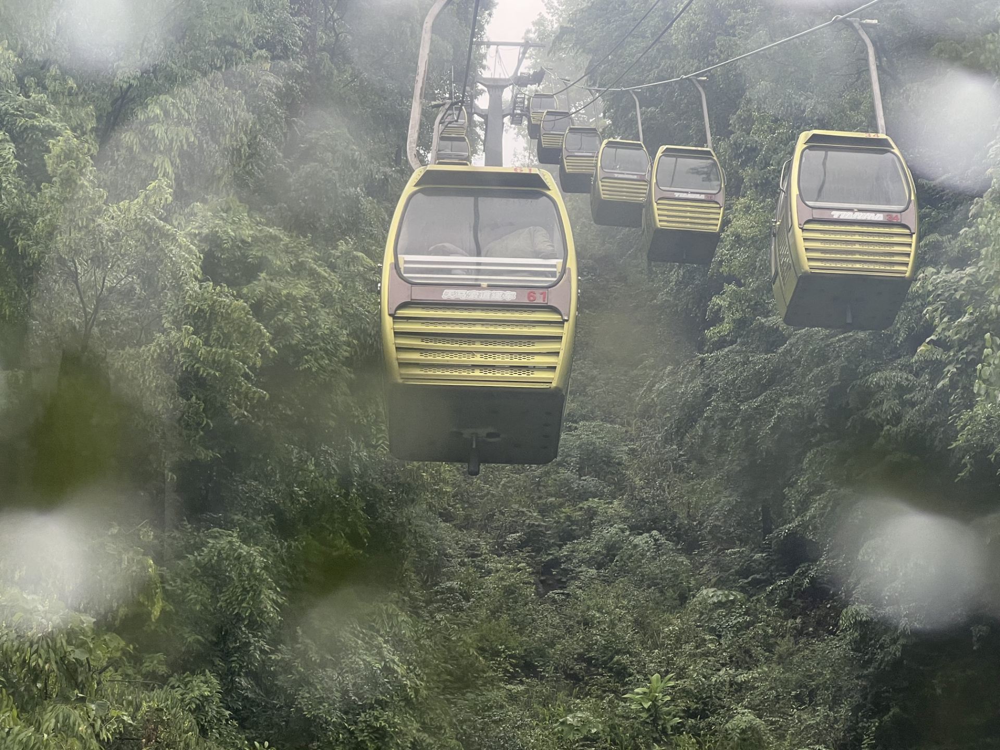
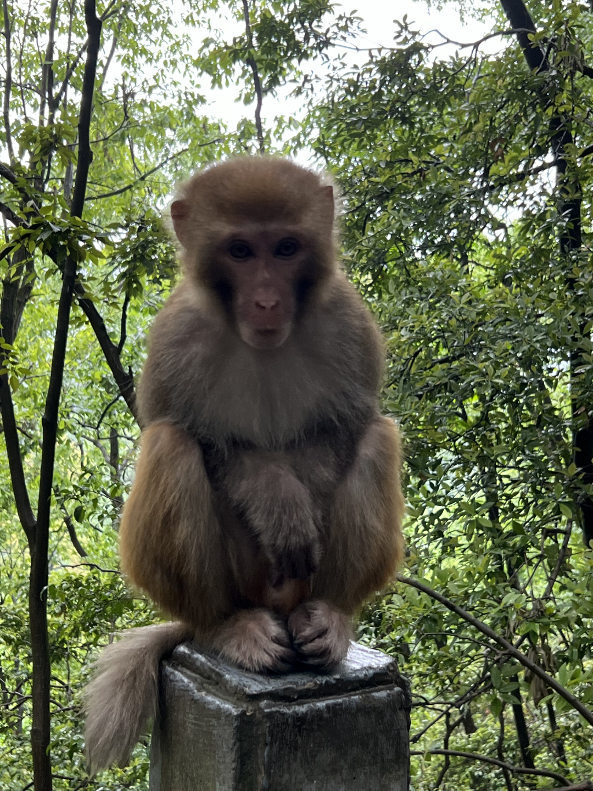
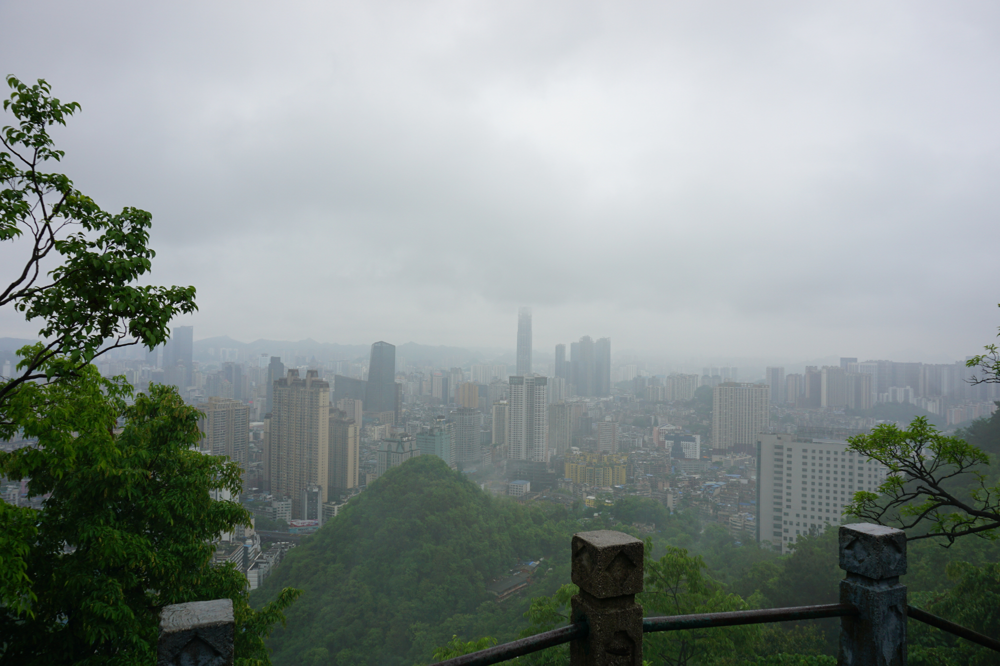
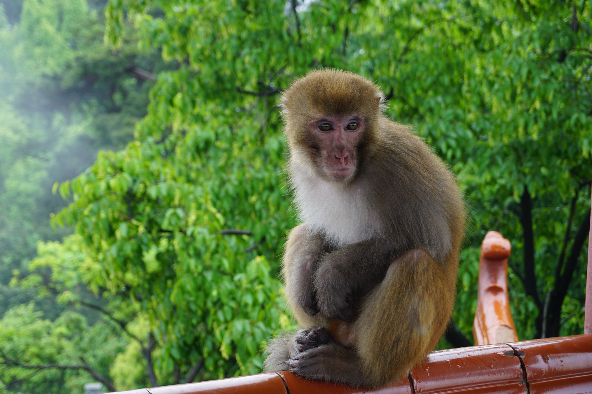
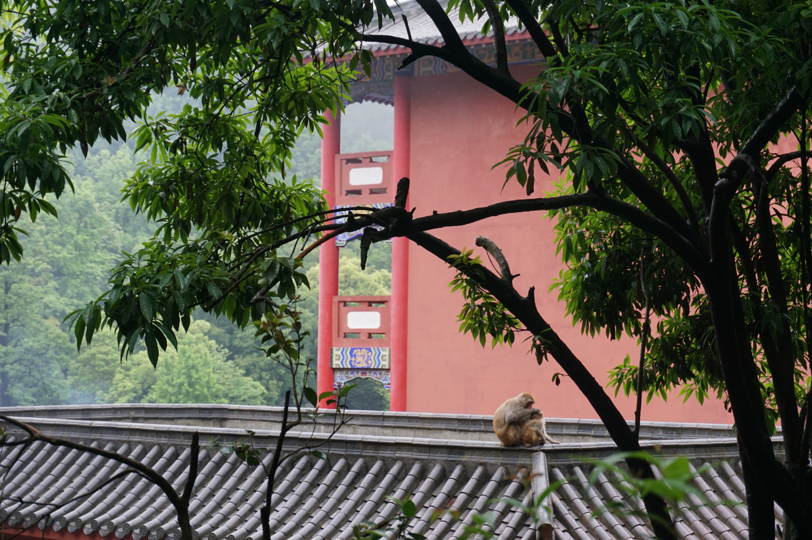
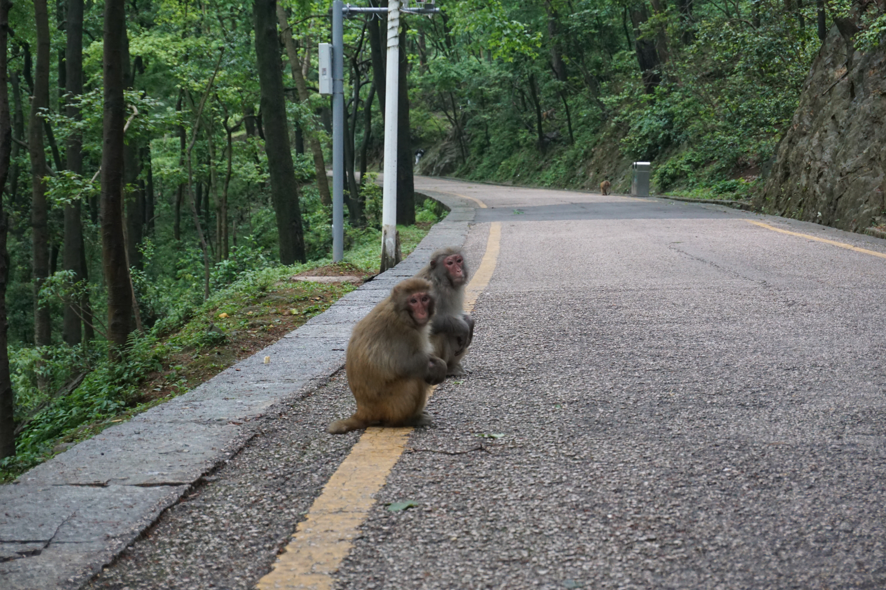
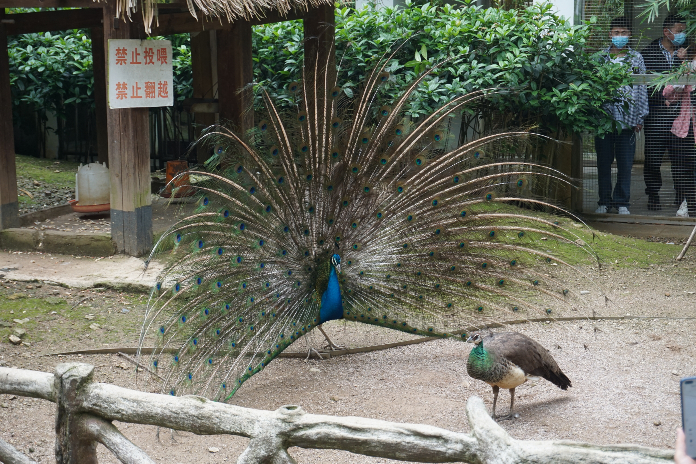
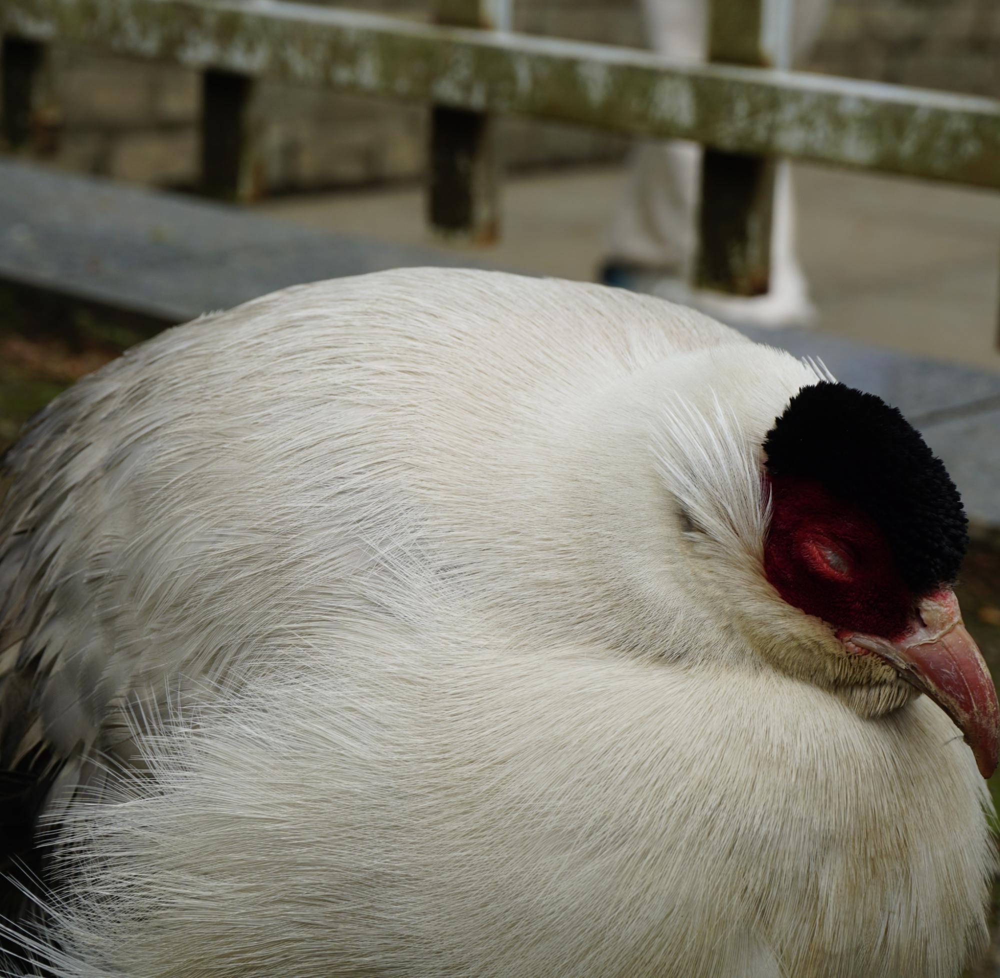
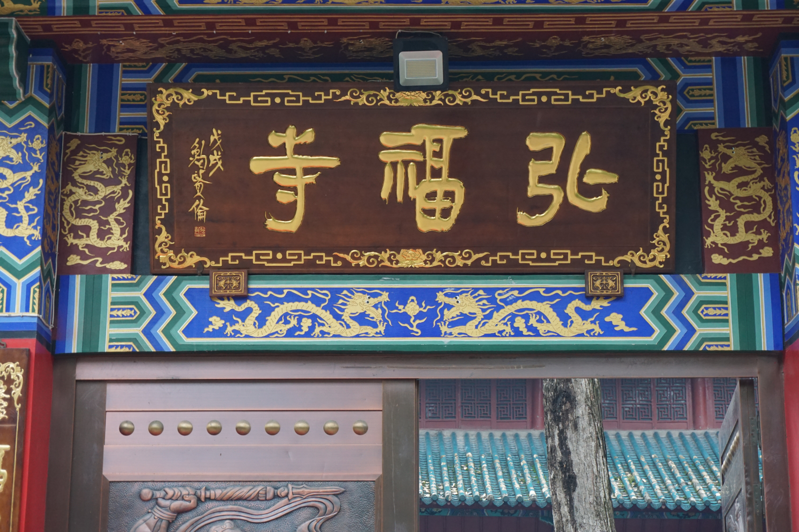
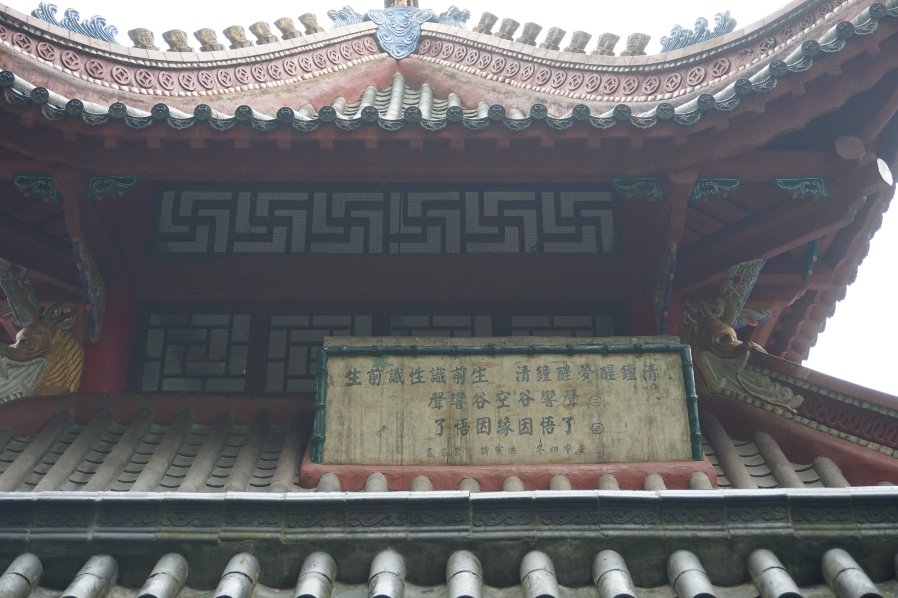

2022年4月30日/ 旅行
黔灵山公园
我们从3月底开始封校，劳动节前几天才开始解封。所以困了一个月的我们必须好好放肆一下，于是就去了贵阳必去的景点，黔灵山。
“黔灵山原名大罗岭，旧名唐山。自明洪武至永乐年间（1375年—1414年）镇远侯顾成游登并发现圣泉之后，山中景点始见于史籍。 清康熙十一年（1672年），赤松和尚云游至此，见大罗岭南众山之间有片窝地很平，这里当时是山脚苗寨大罗木寨民罗氏的祖地，他便向罗氏化缘求捐。 赤松结茅庵于山中，寺庙初具规模，初期取名“黔灵山寺”，“黔灵”意为“贵州之灵山”。 也就是说，这座山是因有黔灵山寺后才得名。此后，赤松和尚将黔灵山寺改名弘福寺。”--百度百科
入门是一条破破的小街，全是卖的吃的，我们来的早于是就买了素粉尝了尝。接着就进了大门。
跟其他景区一样的是这个公园也有索道，如果玩的时间很长的话建议上下山都走路，如果中午来的话就尽量坐索道上山，走路下山，因为这个山里面真的好多好多值得玩的地方
下了索道第一眼看见的就是猴子了
站在最高处眺望整个山下
因为当天下了雨，所以我们上山还有少许的雾气，于是就拍出了这张看起来挺有仙气的猴子
路过山下发现了母猴带着小猴一块在寺庙上休闲
同样还有两只正在等车的猴子
公园里面不光有上万只猕猴，还有一个动物园，竟然是免费的！
还有一只叫不上来名字的鸟
正如文章开头的简介一样，弘福寺是坐落在这座山上的一座寺庙
在这里也见到了这首诗的亲笔
“清钟醒梦醒钟清，生前识性识前生。声响谷空谷响声，了悟因缘因悟了。”
